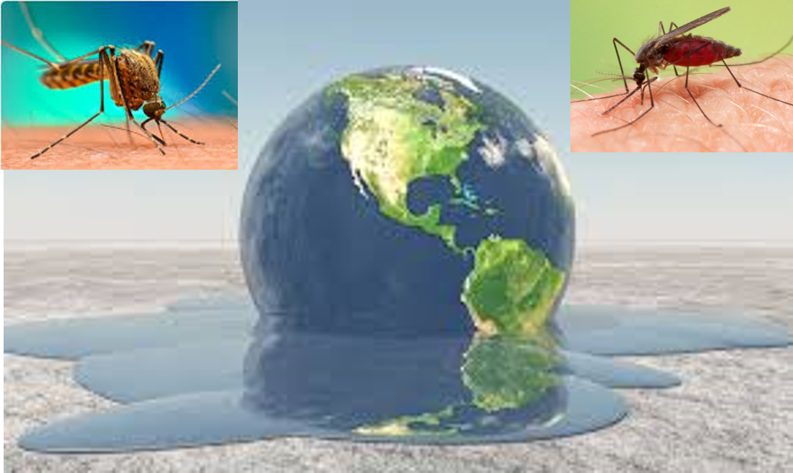

|
I am a master's student in Computational Science and Engineering (CSE) at ETH Zurich (GPA: 5.5/6.0).
I have worked in Model Predictive Controller at the Computational Robotics Lab led by
Prof. Dr. Stelian Coros. In addition, I have done my master thesis in
Human Object Interaction at the Advanced Interactive Technologies Lab led by
Prof. Dr. Otmar Hilliges.
|
{kind=link}
|
I am interested in exciting interdisciplinary challenges. This is an important reason why I chose the
CSE program at ETHZ, which provides the students courses in different domains such as Robotics, Astrophysics, Chemistry, Control Theory,
Computational Finance, Computational Geophysics, Computational Biology etc.
|
|
|
Luohong Wu, Xi Wang, Emre Aksan, Otmar Hilliges Project page is under developing. |
|
|
Juyi Zhang*, Junhao Zhang*, Luohong Wu* * equal contribution |
|

|
Luohong Wu*, Chenyu Shen*, Wynne Katherine * equal contribution 1st place in 2021 IBM Call for Code Research Challenge for Climate Change Keywords: Data Science; Computational Biology; Climate Change; Infectious Disease; Machine Learning |

|
Adrian Hoffmann, Luohong Wu, Marc Styger, Max Eichenberger Keywords: Robust Image Feature; Performance Optimization; Code Optimization |

|
Luohong Wu, Dongho Kang, Stelian Coros Keywords: MPC; Simulation; Quadratic Programming; Performance Optimization |
|
|
Luohong Wu, Bernardo Tabuenca (Supervisor) 13th International Conference on Ubiquitous Computing and Ambient Intelligence UCAmI 2019 Keywords: Ubiquitous Computing; Internet of Things; Ambient Display; Arduino |